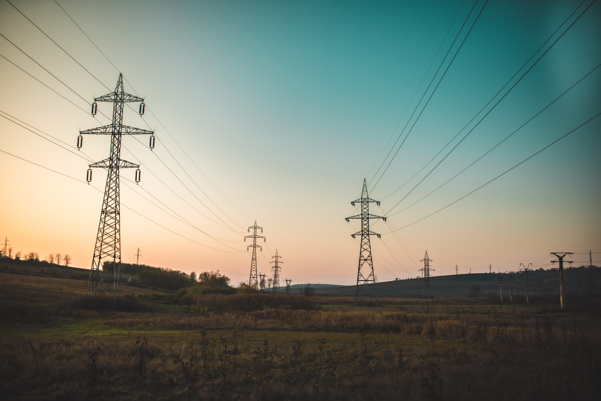
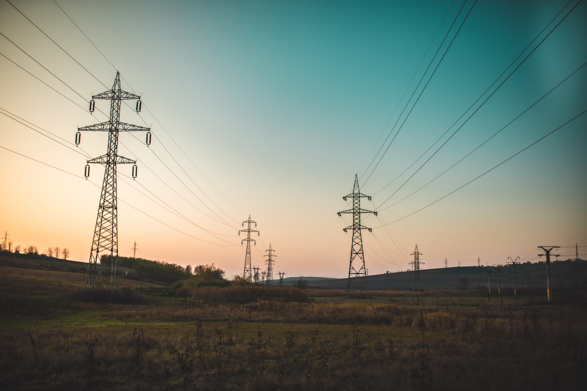
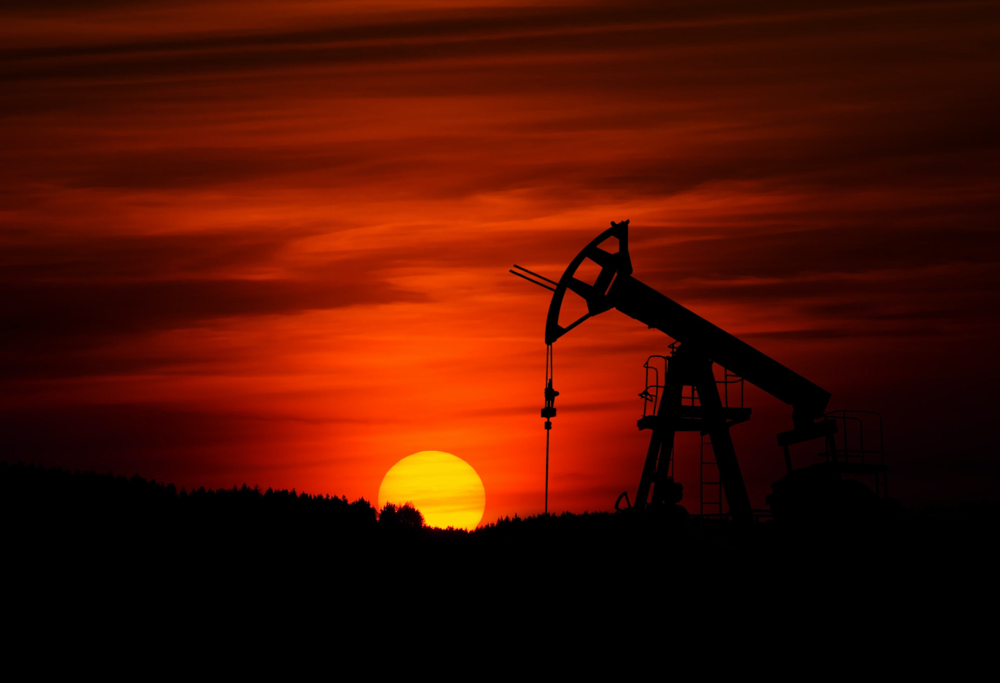
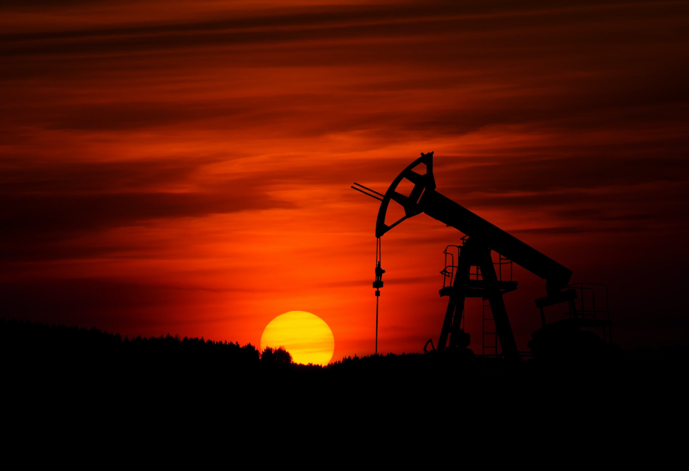

El sector primario
El sector primario es la base económica relacionada con la obtención de recursos naturales y alimentos. Incluye agricultura, ganadería, pesca, silvicultura y minería.
Su importancia varía según el desarrollo económico, y la tecnología ha modernizado estas actividades.
El sector primario contribuye a la seguridad alimentaria, pero también puede tener impactos ambientales.
En la economía global, el comercio de productos primarios es significativo.


 


 
